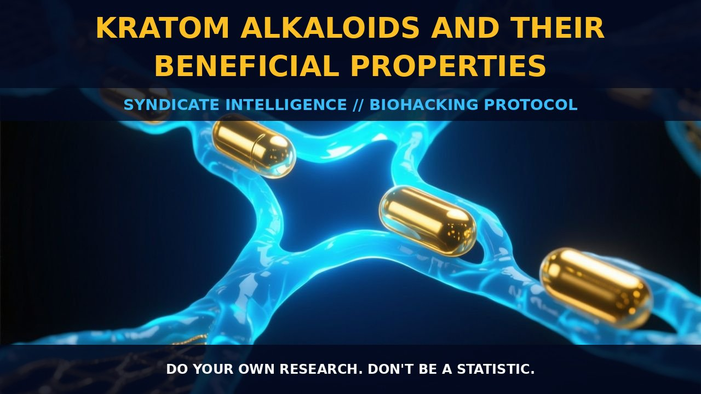

Kratom Alkaloids: Mechanisms and Therapeutic Properties

The Mechanism
Kratom, derived from the leaves of the Mitragyna speciosa plant, is a complex blend of alkaloids that contribute to its psychoactive and therapeutic properties. The primary alkaloids of interest are mitragynine and 7-hydroxymitragynine, which are responsible for the majority of the plant's effects. These alkaloids exert their influence through diverse mechanisms, interacting with various receptors within the central nervous system.
Mitragynine acts as a partial agonist at the μ-opioid receptor, influencing pain perception and mood. It also interacts with κ-opioid receptors, which are known to modulate stress and anxiety responses. 7-Hydroxymitragynine, on the other hand, exhibits a higher affinity for μ-opioid receptors, making it more potent in its opioid-like effects compared to mitragynine.
Other alkaloids such as mitraphylline, speciociliatine, speciogynine, and paynantheine also play roles in the overall pharmacological profile of kratom, contributing to its diverse set of properties. These compounds are generally less well-characterized but are believed to offer additional benefits, such as muscle relaxation and analgesia, through their interactions with adrenergic and serotonergic receptors.
The pharmacological activity of kratom alkaloids is characterized by their dose-dependent stimulant properties. These alkaloids can influence the adrenergic system, activating both α- and β-adrenergic receptors. This activation leads to increased heart rate, alertness, and energy levels at lower doses, while higher doses can produce a more sedative effect. The specific mechanisms through which these alkaloids modulate adrenergic pathways involve the binding to and activation of adrenergic receptors, leading to the release of catecholamines like norepinephrine and dopamine.
Furthermore, these alkaloids interact with the serotonergic system, influencing mood and anxiety through the modulation of serotonin receptors. The precise nature of these interactions is still under investigation, but it is clear that kratom alkaloids can impact both the adrenergic and serotonergic systems, providing a multifaceted approach to enhancing cognitive and emotional well-being.
Biological Leverage
Kratom alkaloids exert their effects through a multitude of biological pathways, primarily through their interactions with opioid, adrenergic, and serotonergic receptors. Mitragynine and 7-hydroxymitragynine, the most prominent alkaloids, are key players in this complex interplay.
By acting as partial agonists at μ-opioid receptors, these alkaloids can modulate pain perception and mood states, contributing to their analgesic and anxiolytic properties. The interaction with κ-opioid receptors further enhances these effects, influencing stress and anxiety responses. Additionally, the activation of adrenergic receptors, particularly α- and β-adrenergic receptors, leads to increased energy levels and alertness, which are beneficial for cognitive tasks and productivity.
Moreover, the modulation of the serotonergic system by kratom alkaloids provides an additional layer of biological leverage. By influencing serotonin receptors, these alkaloids can enhance mood and alleviate anxiety, supporting overall emotional stability. The activation of adrenergic receptors also promotes the release of catecholamines like norepinephrine and dopamine, enhancing cognitive function and focus. This multi-receptor action allows kratom alkaloids to provide a comprehensive approach to enhancing both physical and mental well-being, making them valuable tools for biohackers and self-optimizers seeking to improve their performance and mood.
Tactical Implementation
For those looking to harness the benefits of kratom alkaloids, careful consideration of dosage and timing is crucial. Lower doses, typically in the range of 2 to 5 grams, can provide a stimulating effect, enhancing focus and alertness while reducing anxiety. This dose range is particularly beneficial for cognitive tasks that require sustained attention and concentration. Higher doses, often exceeding 5 grams, can produce a more sedative and calming effect, ideal for winding down and reducing stress.
These higher doses can also enhance mood and promote relaxation, making them suitable for evening use or as a tool for managing anxiety. When stacking kratom with other compounds, such as nootropics or anxiolytics, it is important to consider the potential synergistic effects. For example, combining kratom with caffeine can amplify the stimulant properties, enhancing alertness and cognitive performance. Similarly, stacking kratom with L-theanine can balance the stimulating effects, providing a smoother, more relaxed state of alertness.
Incorporating kratom into a regimen of galantamine protocols can further enhance cognitive function by promoting lucid dreaming and enhancing memory consolidation. However, it is essential to monitor individual tolerance and adjust dosages accordingly to avoid adverse effects such as dizziness or gastrointestinal discomfort.
Prostar Life Hack
For optimal cognitive and mood enhancement, start with lower doses (2-5 grams) of kratom for a stimulating effect during the day, and increase to higher doses (>5 grams) for a calming and mood-enhancing effect in the evening. Consider stacking kratom with caffeine for an amplified stimulant effect and with L-theanine for a balanced state of alertness.
[ AUTHOR: LEAD TECHNICAL RESEARCHER ]